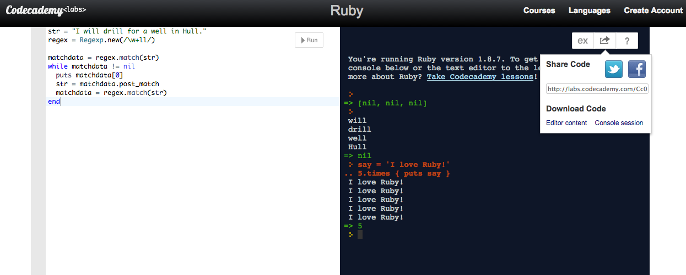
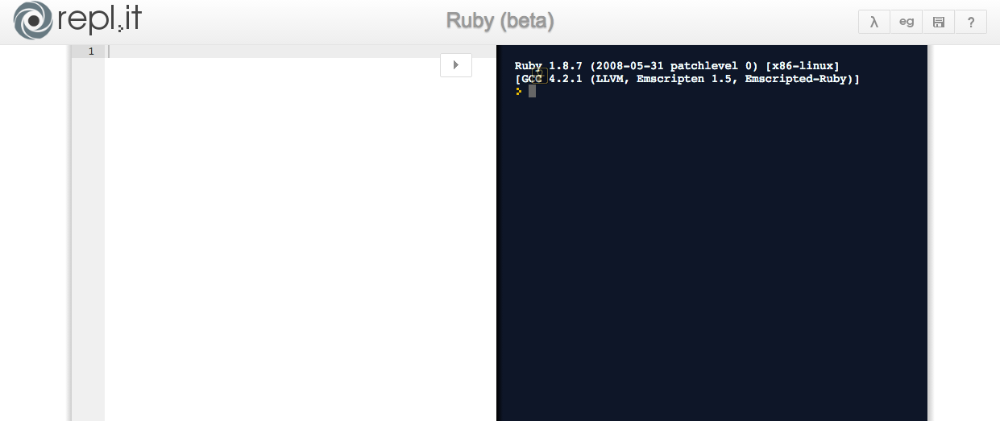

- Try Ruby pros it's pretty, and simple, it's also built into a site that helps you learn ruby, so if you are struggling, you can always use the lessons!
- Codeacademy Labs pros this is an editor, console space with examples for you to use and a simple clean workspace to try out your code.
- IRB in your terminal, using your editor Type 'irb' in terminal.
- repl.it pros very much built like the Codeacademy Labs, this space lets you run code on lots of languages, not just ruby! you can save the copy of all your code in the editor and console history for your record.
cons it's not built to let you edit your code AND run it, so you'll have problems using this for large sets of code.

cons this site uses an old version of RUBY docs, so some of your code might not work.

pros it returns instant result to code.
cons in the same vein as the codeacademy labs, this is running an old version of Ruby.
